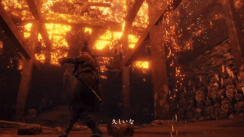
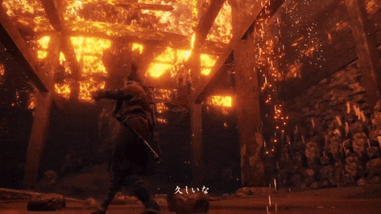
 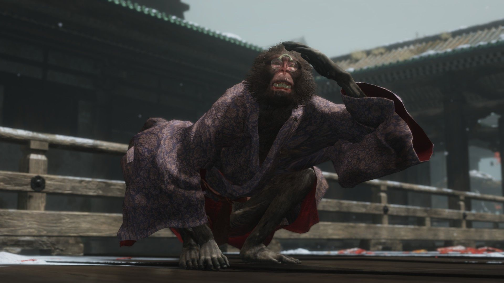
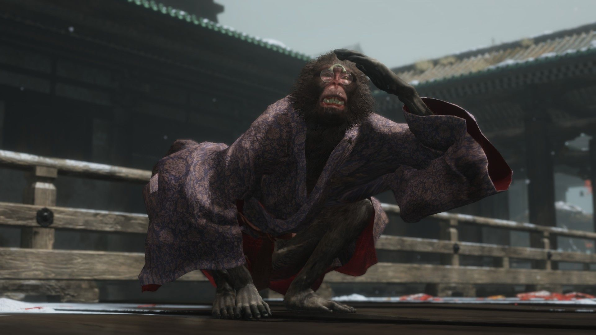
 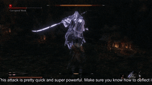
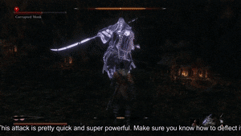
 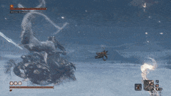
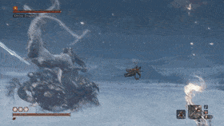
 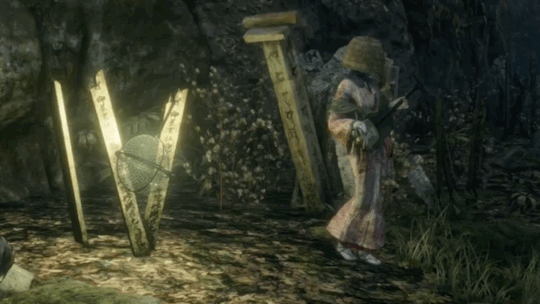
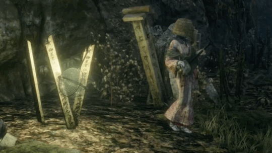


An old acquintance and agile opponent, unmatched in speed and cunning.
A fearsome opponet riding a sturdy mount and brandishing a long-reaching polearm.
A determined samurai who seeks to gain immortality through the Dragon Heritage.
Illusionary monkeys that can be defeated by taking advantage of their senses.
This colossal ape sits in its watering hole, tending to the Flower in order to attract a mate.
The nebulous monk watches over the cave entrance deep in Mibu Village.
A master of the blade who is ready to cut down those who fall to Shura.
The Divide Dragon lies in wait in another realm.
One of the greatest of the Shinobis, and Sekiro's father.
Appearing to be an innocent lady, but is provoked to attack when she believes you have lied to her. Quite a warrior.
He once asked Wolf to kill him when it came to this. In this form, you will do what you must.
A master of both blade and spear. This is your last chance to prove all of your skills to defeat him.
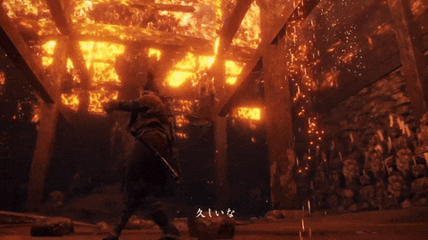
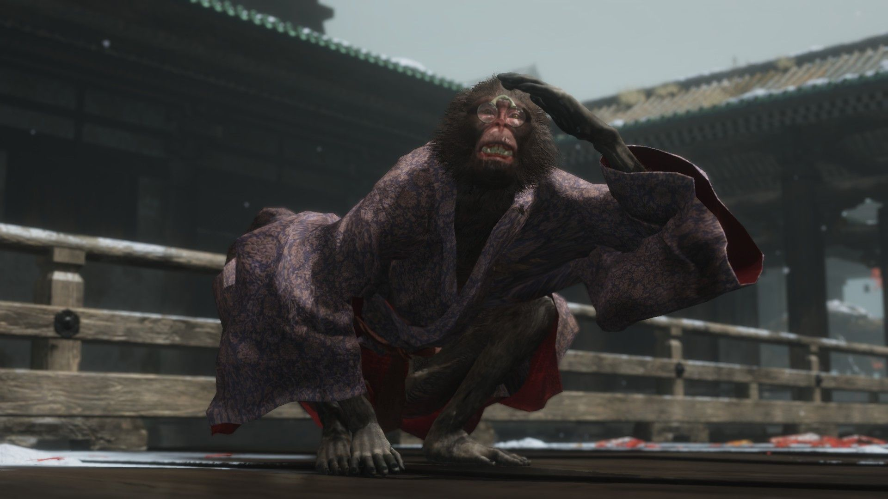
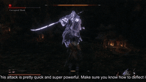
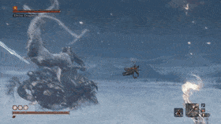
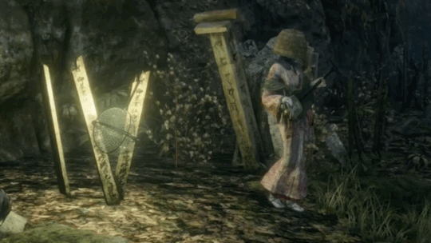